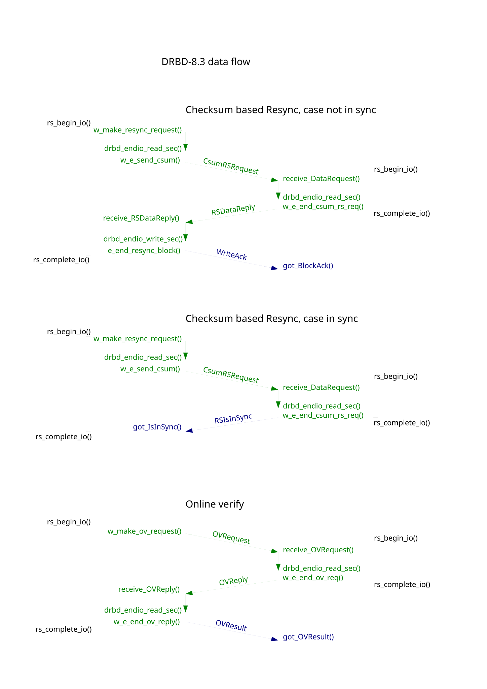
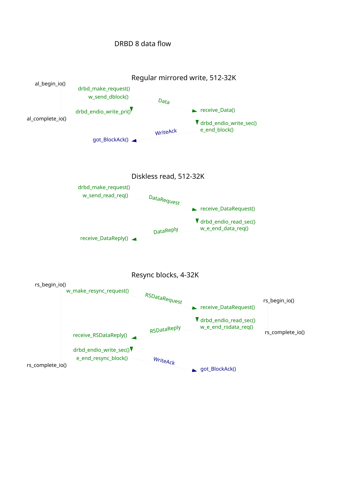

Data flows that Relate some functions, and write packets¶


Sub graphs of DRBD’s state transitions¶
digraph conn_states {
StandAllone -> WFConnection [ label = "ioctl_set_net()" ]
WFConnection -> Unconnected [ label = "unable to bind()" ]
WFConnection -> WFReportParams [ label = "in connect() after accept" ]
WFReportParams -> StandAllone [ label = "checks in receive_param()" ]
WFReportParams -> Connected [ label = "in receive_param()" ]
WFReportParams -> WFBitMapS [ label = "sync_handshake()" ]
WFReportParams -> WFBitMapT [ label = "sync_handshake()" ]
WFBitMapS -> SyncSource [ label = "receive_bitmap()" ]
WFBitMapT -> SyncTarget [ label = "receive_bitmap()" ]
SyncSource -> Connected
SyncTarget -> Connected
SyncSource -> PausedSyncS
SyncTarget -> PausedSyncT
PausedSyncS -> SyncSource
PausedSyncT -> SyncTarget
Connected -> WFConnection [ label = "* on network error" ]
}
digraph disk_states {
Diskless -> Inconsistent [ label = "ioctl_set_disk()" ]
Diskless -> Consistent [ label = "ioctl_set_disk()" ]
Diskless -> Outdated [ label = "ioctl_set_disk()" ]
Consistent -> Outdated [ label = "receive_param()" ]
Consistent -> UpToDate [ label = "receive_param()" ]
Consistent -> Inconsistent [ label = "start resync" ]
Outdated -> Inconsistent [ label = "start resync" ]
UpToDate -> Inconsistent [ label = "ioctl_replicate" ]
Inconsistent -> UpToDate [ label = "resync completed" ]
Consistent -> Failed [ label = "io completion error" ]
Outdated -> Failed [ label = "io completion error" ]
UpToDate -> Failed [ label = "io completion error" ]
Inconsistent -> Failed [ label = "io completion error" ]
Failed -> Diskless [ label = "sending notify to peer" ]
}
digraph peer_states {
Secondary -> Primary [ label = "recv state packet" ]
Primary -> Secondary [ label = "recv state packet" ]
Primary -> Unknown [ label = "connection lost" ]
Secondary -> Unknown [ label = "connection lost" ]
Unknown -> Primary [ label = "connected" ]
Unknown -> Secondary [ label = "connected" ]
}